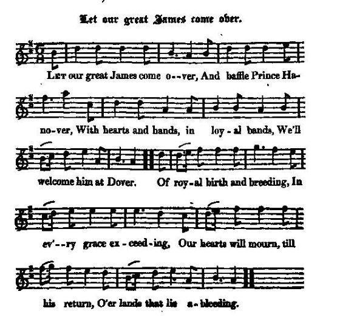

Let our great James come over
Pour que Jacques recouvre...
The Act of Abjuration (1701)
Tune - Mélodie"Let our great James come over"
from Hogg's "Jacobite Reliques" Part 1, N°54
Sequenced by Christian Souchon

|
Tune and lyrics apparently composed c. 1714-1715 (accession of the first Hanoverian king, 1715 Rising).
|
Sans doute composé (musique et paroles) vers 1714-1715 (avènement du premier Hanovre, soulèvement de 1715).
|

|
LET OUR GREAT JAMES COME OVER. [1]
1. Let our great James come over, And baffle Prince Hanover, With hearts and hands, in loyal bands, We'll welcome him at Dover. Of royal birth and breeding, In ev'ry grace exceeding, Our hearts will mourn till his return, O'er lands that lie a-bleeding. 2. Let each man, in his station, Fight bravely for the nation; Then may our king long live and reign, In spite of abjuration. [2] He only can relieve us From every thing that grieves us: Our church is rent, our treasure spent; He only can reprieve us. 3. Too long he's been excluded, Too long we've been deluded : Let's with one voice sing and rejoice; The peace is now concluded. The Dutch are disappointed, Their whiggish plots disjointed; The sun displays his glorious rays, To crown the Lord's anointed. 4. Away with Prince Hanover! We'll have no Prince Hanover! King James the Eighth has the true right, [3] And he is coming over. [4] Since royal James is coming, Then let us all be moving, With heart and hand at his command, To set the Whigs a-running. 5. Let not the abjuration Impose upon our nation, Restrict our hands, whilst he commands, Through false imagination: For oaths which are imposed Can never be supposed To bind a man, say what they can, When justice is opposed. 6. The parliament's gone over, The parliament's gone over, And all the Whigs have run their rigs, And brought home Prince Hanover. And now that he's come over, O what will ye discover, When in a rope we'll hang him up ? And so farewell, Hanover. 7. But whom will ye have over ? But whom will ye have over? King James the Eighth, with all our might, And land him in our border. And when that he's come over, O what will ye discover, But Whigs in ropes high hanging up, For siding with Hanover? Source: Jacobite Minstrelsy, published in Glasgow by R. Griffin & Cie and Robert Malcolm, printer in 1828. |
POUR QUE JACQUES RECOUVRE [1]
1. Pour que Jacques recouvre Le trône que Hanovre Lui ravit, bataillons loyaux, Allons l'accueillir à Douvres! Riche de par sa naissance De grâces en abondance, Lui seul peut mettre fin par son retour A notre désespérance. 2. Que chacun à sa place, Pour notre nation fasse Avec courage son devoir! Dieu fasse au roi cette grâce! On voudrait que l'on abjure [2] Le seul prince qui conjure Les maux dont souffrent l'église et l'état, Le seul dont l'âme soit pure. 3. Si l'on a pu l'exclure Un temps par forfaiture, Maintenant que la paix revient Bien trop longtemps cela dure. La confusion des Bataves, Des complots de leurs esclaves, Permet au soleil de luire à nouveau, Pour son sacre, sans entrave! 4. Que disparaisse Hanovre, Ce prince qu'on réprouve! Jacques VIII est le seul vrai roi, [3] Et son peuple le retrouve. Jacques vient. Que nul n'en doute! [4] Allons, mettons-nous en route! Plaçons-nous tous sous son commandement! Mettons les Whigs en déroute! 5. Que l'abjuration cesse, Cette scélératesse Qu'on nous impose par la loi Factice que tous transgressent! Serment fait sous la contrainte N'est jamais qu'odieuse feinte. Quoi qu'on dise, on ne pourrait l'opposer A notre si juste plainte. 6. Un parlement aux ordres, Un parlement aux ordres, Les Whigs faisant feu de tout bois, Put faire venir Hanovre. Il est donc en Angleterre. Que pensez-vous qu'il va faire? Pour lui, quand il aura la corde au cou Sonnera l'heure dernière! 7. Nous, nous voulons que vienne, Nous, nous voulons que vienne, Le roi Jacques VIII à tout prix, Car cette terre est la sienne. Et quand il sera des nôtres, Les choses seront tout autres: Hanovre, seront pendus haut et court Ceux qui t'ont prêté main forte! (Trad. Christian Souchon(c)2009) |
|
[1] Hogg states in a note: "Though this song is not without merit, it is so general in its application as to afford no ground for remark".
The author of the "Jacobite Minstrelsy" (1828), anxious not to be mistaken for having Jacobite sympathy adds: "One thing may be inferred, however, from the last verse—which is. that if the Jacobites had got their own way, they would have made sad work among the Whigs. Hanging would have been thought by far too gentle a punishment for them." [2] The Act of Abjuration here referred to, was passed by the parliament of King William, in 1701. By this Act, all persons holding situations in church or state, were compelled, by oath, to abjure the pretended Prince of Wales (James II's son), to recognise William as their " right and lawful King, and his heirs, according to the Act of Settlement". They also became bound to maintain the Established Church of England, at the same time tolerating dissenters. [3] James II of England, VII of Scotland died in 1701. His 13 year old son became, for the Jacobites, King James III/VIII. (cf Genealogy ). [4] This sentence may allude to the events of the year 1715 (Braemar Hunting party...) |
[1] Hogg indique dans une note: "Bien que ce chant ne soit pas sans intérêt, il est de portée si générale qu'on ne peut faire de remarques à son propos."
L'auteur du "Jacobite Minstrelsy" (1828), quant à lui, pour ne pas être taxé de sympathies jacobites, ajoute: "Il est cependant une conclusion que l'on peut tirer de la dernière strophe: si les Jacobites avaient pris le pouvoir, ils auraient réglé leur compte aux Whigs, la simple pendaison leur semblant une peine bien trop légère." [2] L' Acte d'abjuration auquel il est fait allusion, fut adopté par le parlement sous le règne de Guillaume III en 1701. Ce texte stipulait que tous les dignitaires de l'église et de l'état, devaient sous la foi du serment abjurer le "prétendu Prince de Galles" (le fils de Jacques II ) et reconnaître Guillaume comme leur "légitime et vrai roi, ainsi que ses héritiers, en conséquence de l'Acte de dévolution". Ils s'engageaient aussi à maintenir l'Eglise établie d'Angleterre, alors même qu'on tolérait des dissidences. [3] Jacques II d'Angleterre et VII d'Ecosse mourut en 1701. Son fils âgé de 13 ans devenait, aux yeux des Jacobites, Jacques III/VIII. (cf Généalogie ). [4] Cette phrase fait peut-être allusion aux événements de 1715 (la "partie de chasse" à Braemar...) |